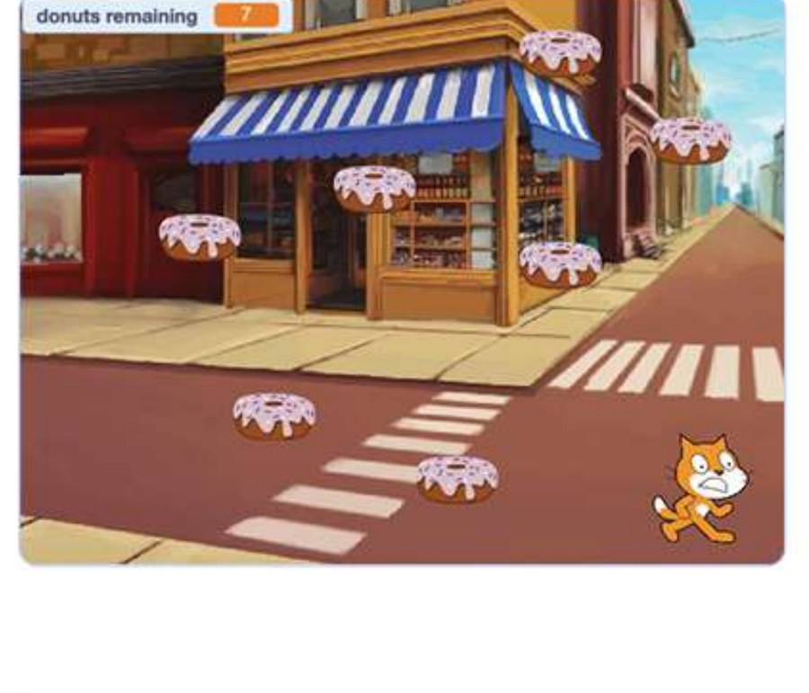

Contoh tampilan/proyek dari Modul 08
Modul penutup ini mengikat semua modul sebelumnya menjadi satu narasi utuh — dimulai dari operasi matematika dasar yang diterapkan di Google Sheets, lalu tinjauan besar seluruh materi (mouse/keyboard, coding, internet, Scratch Junior), dan diakhiri pengumpulan portofolio digital serta perayaan kelulusan.
Modul ini memberi anak rasa pencapaian besar dan bukti nyata (portofolio) dari 7 modul perjalanan mereka. Secara emosional, ini adalah momen paling penting di seluruh kursus — sesuai prinsip bahwa perasaan mendorong pembelajaran yang melekat.
Anak melakukan operasi hitung dasar di Google Sheets, mengulang dan mengaplikasikan kembali keterampilan dari tujuh modul sebelumnya, serta menyusun portofolio sederhana dari karya-karya yang telah mereka buat.
Sebelum mengajar modul ini, pastikan Anda 100% percaya diri dengan hal-hal berikut:
Sesi terakhir ini adalah tentang merayakan, bukan menguji. Ingat prinsip pujian spesifik dari Bagian 2 — sebut pencapaian nyata tiap anak sepanjang kursus, bukan sekadar "selamat sudah lulus".
Sebagai hasil modul ini, anak-anak menguasai operasi matematika dasar dan menerapkannya saat berkenalan dengan Google Sheets. Mereka akan beralih ke pengulangan materi yang menarik dan mengumpulkan portofolio digital mereka, mencerminkan perjalanan mereka!
Jawab kelima pertanyaan berikut tentang modul ini. Anda perlu mendapat 70% atau lebih (minimal 4 dari 5 benar) untuk melanjutkan.
1. Fungsi utama modul penutup ini secara emosional adalah...
2. "Maraton Pemrograman: Perjalanan Melalui Kode" berfungsi sebagai...
3. Sikap tutor yang tepat di sesi terakhir modul ini adalah...
4. Portofolio digital yang dikumpulkan di modul ini sebaiknya berisi...
5. Kenapa pujian di sesi terakhir harus spesifik menyebut pencapaian nyata, bukan sekadar "selamat sudah lulus"?